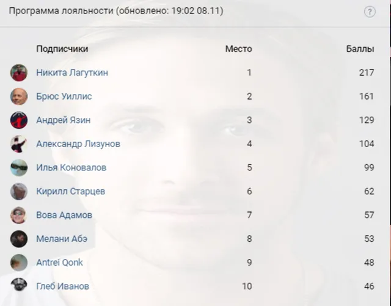

Итоги лояльности
ВКонтакте
🔱А мы опять-таки выражаем огромнейшую благодарность [id347679904|Андрею Язину] з…
8 ноября 2020 · №708 в выгрузке стены · оригинал во ВКонтакте ↗
![🔱А мы опять-таки выражаем огромнейшую благодарность [id347679904|Андрею Язину] з…](../img/vk/708_0t.webp)

#ИтогиЛояльности@criticssteam #19
🔱А мы опять-таки выражаем огромнейшую благодарность [id347679904|Андрею Язину] за финансовую поддержку нашего сообщества!!!
===========
🎗А итоги программы лояльности следующие:
🥇 [id284440935|Никита Лагуткин]
🥈 [id491132613|Брюс Уиллис]
🥉 [id347679904|Андрей Язин]
========
Ниже, как всегда, прикреплён ТОП-10 подписчиков по активности за неделю, всем спасибо.
🔱А мы опять-таки выражаем огромнейшую благодарность [id347679904|Андрею Язину] за финансовую поддержку нашего сообщества!!!
===========
🎗А итоги программы лояльности следующие:
🥇 [id284440935|Никита Лагуткин]
🥈 [id491132613|Брюс Уиллис]
🥉 [id347679904|Андрей Язин]
========
Ниже, как всегда, прикреплён ТОП-10 подписчиков по активности за неделю, всем спасибо.